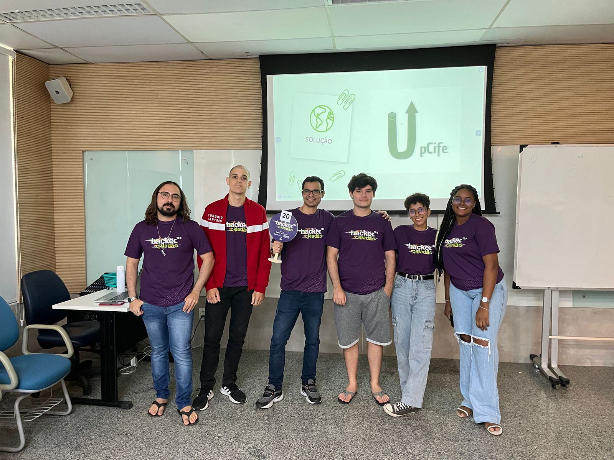
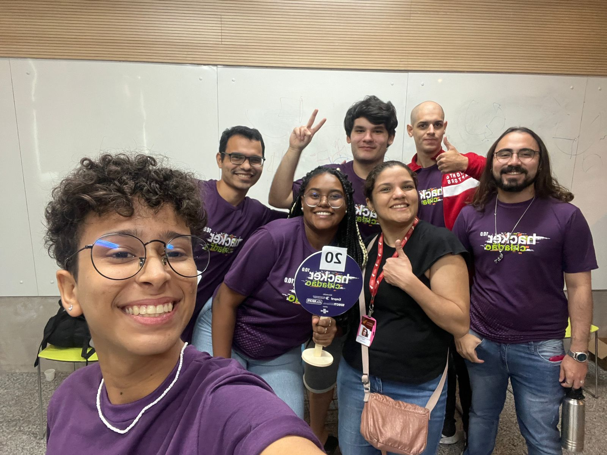
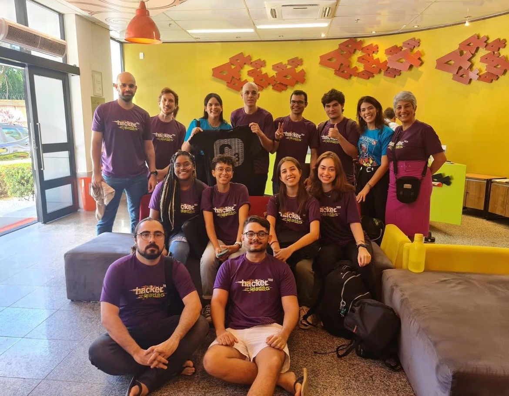
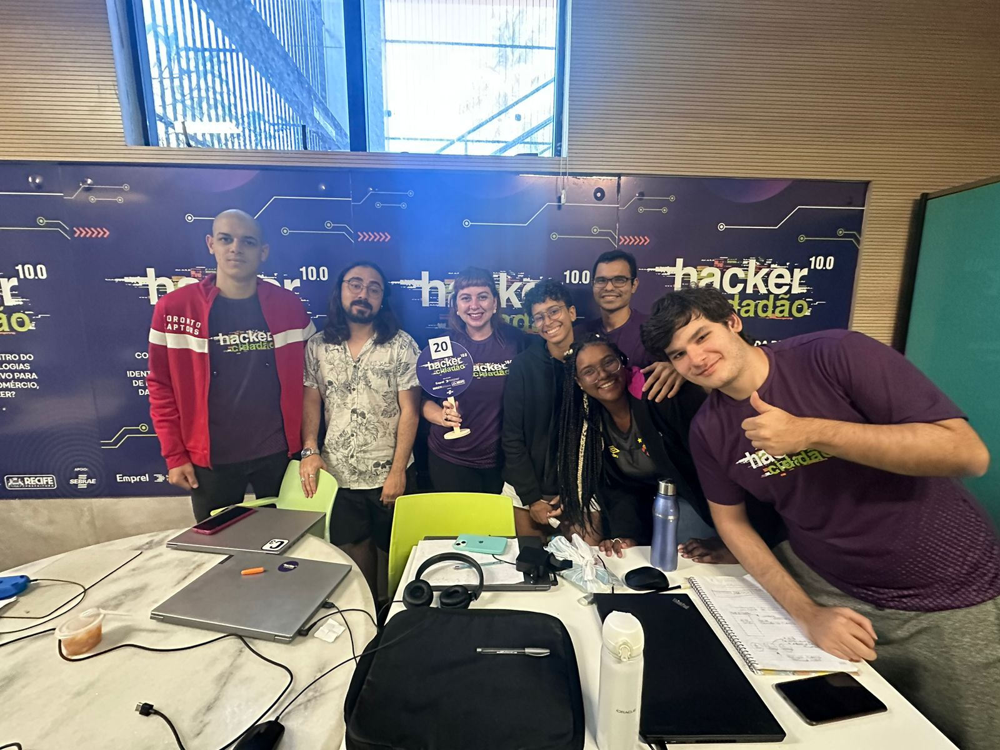

Java e Python
Lógica de programação, orientação a objetos, validações e organização de regras.
Ciência da Computação - UNICAP
Redes, desenvolvimento e automação
Formado em Ciência da Computação pela UNICAP, à procura da primeira oportunidade de emprego em tecnologia, com base em redes, desenvolvimento web, backend, banco de dados, pesquisa e desenvolvimento.
Habilidades
Lógica de programação, orientação a objetos, validações e organização de regras.
Modelo conceitual, modelo lógico relacional, DML, DQL e manipulação de dados.
QoS, SDN, experimentos controlados, análise de métricas e documentação técnica.
HTML, CSS, JavaScript, responsividade, DOM e construção de páginas publicadas.
Comunicação, resiliência, colaboração e abertura para aprender com feedback.
Java + JavaFX
Sistema visual para simular a administração de um hotel, com telas para funcionários, quartos e hóspedes.
Python + Discord API
Conjunto de bots com comandos slash, lembretes por usuário, avisos automáticos, leitura de eventos, persistência em JSON e música em chamada de voz.
Jogo de dedução com senha de 4 dígitos, validação e histórico de tentativas.
Versão simples do Snake com canvas, pontuação, colisão e controle por teclado.
Jogo de pares com embaralhamento, controle de estado, tentativas e reinício.
Scripts Lua com foco em organização, performance, configurações visuais e resposta rápida a eventos. Bom para mostrar cuidado com estado, tempo de execução e refatoração.
Trabalho em redes de computadores avaliando QoS em ambiente SDN com DSCP, OpenFlow, Ryu, Open vSwitch e Mininet. O estudo compara cenários de rede usando métricas como delay, jitter, bitrate, perda e goodput.
Desenvolvimento de proposta de MVP em equipe, com prazo curto, apresentação e validação de ideia.
Construção de ferramentas próprias para organizar avisos, comandos e rotinas com Python e Lua.
Busco uma oportunidade para aplicar minha base técnica em projetos reais e crescer com uma equipe experiente.




Hacker Cidadão
Em 3 dias, participei da criação de uma proposta de plataforma para incentivar competições de upcycle em escolas. Foi uma experiência importante para treinar colaboração, comunicação e tomada de decisão sob pressão.
Contato
Estou em busca da primeira oportunidade de emprego em tecnologia e disponível para entrevistas.